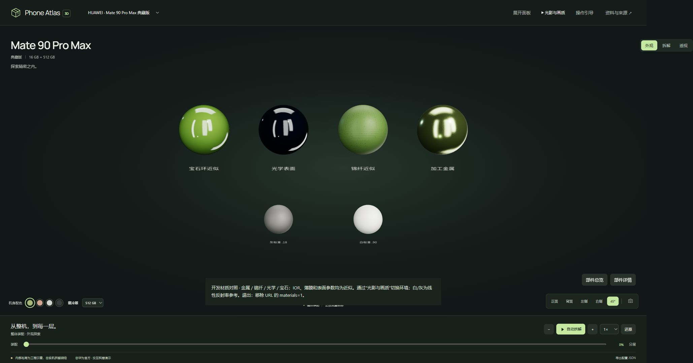

材质与外观 · v1.1 待审画册
程序化近似，内部为工程示意。截图不证明实体准确度。G5真实手机验收未关闭，主线和线上版本保留v1.0。本画册仅分发原创运行截图，不包含官方/第三方参考原图。
打开本地交互版 · 逐项验收 · 性能 · 资料账本
三组 A/B
1280×720，同一组相机位置和RoomEnvironment基准灯光。旧图DPR未单独存档，不作严格像素性能或色彩实验。滑块仅帮助比较可见变化。
材质标准与移动布局

390px布局 · 模拟图形失败后的来源访问